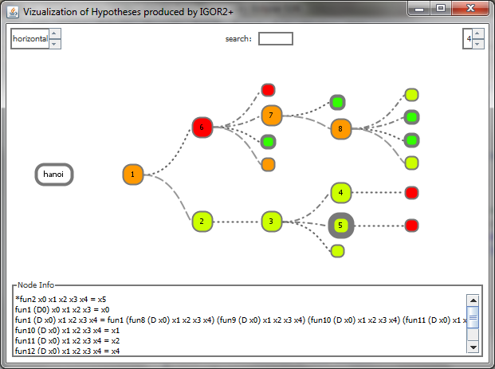

IGOR2+ Search Tree Viewer
About the project
The IGOR2+ Search Tree Viewer is a visualization tool designed for analysing the search tree produced by IGOR2+. Therefore log files are parsed and information is brought in TreeML format. The resulting TreeML file is then visualized via the Prefuse visualization kit.
If you want to obtain the source code and/or the runnable jar file, please contact me.
IGOR 2+
http://www.cogsys.wiai.uni-bamberg.de/effalip/
External libraries used in this project
JDOM: http://www.jdom.org/
Prefuse: http://prefuse.org/